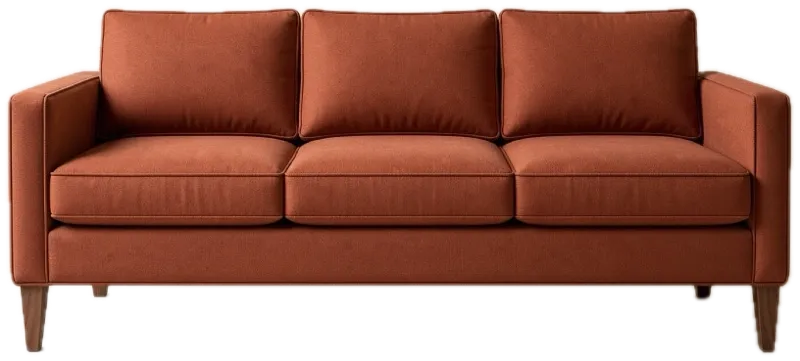
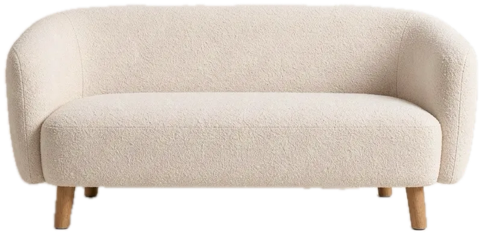
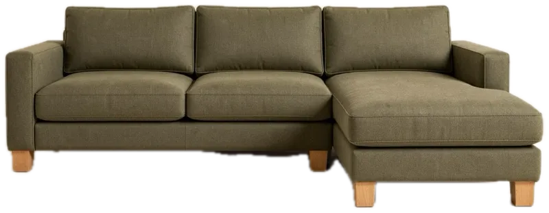
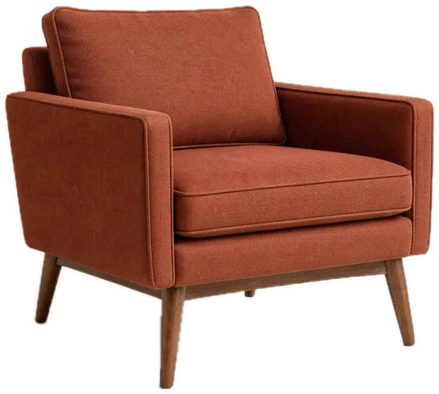

-15%Sofa Lena
Trzyosobowa, 220 cm, pianka HR, nogi z litego orzecha
4,9 na 5 (128 opinii)
Każda sofa ma stelaż z suszonej buczyny i dębu, sprężyny faliste i piankę HR, która nie siada po roku. Wybierasz tkaninę i szerokość, a my robimy mebel w 3 do 6 tygodni, termin podajemy przy każdym modelu. Nie wiesz, jaki kolor pasuje do Twojej podłogi? Zamów do 6 próbek tkanin gratis, przyjdą w 2 dni robocze. Jeśli salon jest mały, zacznij od poradnika doboru sofy do małego salonu.
5 modeli

-15%Trzyosobowa, 220 cm, pianka HR, nogi z litego orzecha
4,9 na 5 (128 opinii)

NowośćDwuosobowa, 165 cm, boucle, do małych salonów
4,8 na 5 (73 opinie)

BestsellerNarożnik z szezlongiem, 280 cm, nogi dębowe
4,7 na 5 (54 opinie)

Głęboka, jedno długie siedzisko, 240 cm, welur
4,6 na 5 (31 opinii)

Do kompletu z sofą Lena, 85 cm, nogi z orzecha
4,8 na 5 (47 opinii)
Wyślemy Ci do 6 próbek tkanin i drewna. Przykładasz je do ściany i podłogi, zanim cokolwiek zapłacisz.
Żaden model nie spełnia wszystkich filtrów. Zmień szerokość albo cenę. Każdą sofę możemy też zrobić w innej tkaninie z katalogu.
Sofa to mebel, z którego korzystasz codziennie, więc zacznij od trzech pytań: ile osób na niej siada, czy będziesz na niej spać i jak szerokie są drzwi do salonu. Odpowiedzi zawężają wybór bardziej niż kolor.
Do salonu poniżej 16 m² zwykle wystarcza sofa 165 do 180 cm. Narożnik 280 cm potrzebuje co najmniej 3,2 m ściany. Przy każdym modelu podajemy minimalną szerokość drzwi, a nogi i oparcia w większości modeli odkręcamy przy wnoszeniu.
Przy dzieciach i zwierzętach wybierz tkaninę o odporności na ścieranie powyżej 50 000 cykli (podajemy ją w specyfikacji). Boucle jest miękkie, ale łatwiej łapie pazury. Welur dobrze znosi plamy z wody.
Tanie sofy mają ramę z płyty wiórowej, która po kilku latach zaczyna trzeszczeć na łączeniach. U nas rama jest z litej buczyny i dębu, klejona i kołkowana, dlatego dajemy na nią 10 lat gwarancji.
Sofa Lino ma szezlong, na którym wygodnie śpi jedna osoba. Pozostałe modele nie mają funkcji spania, bo mechanizm pogarsza komfort siedzenia.
Tak. W katalogu jest 38 tkanin. Zamów próbki, a potem wpisz nazwę tkaniny w uwagach do zamówienia.
Od 3 000 zł dostawa z wniesieniem i montażem jest gratis. Poniżej tej kwoty kosztuje 149 zł. Szczegóły dostawy